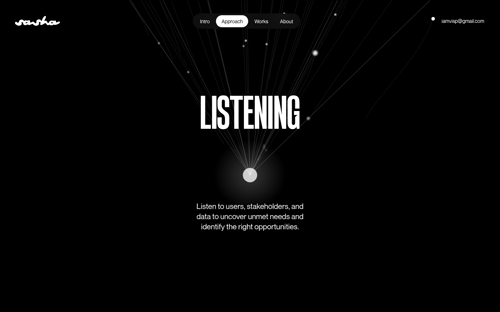
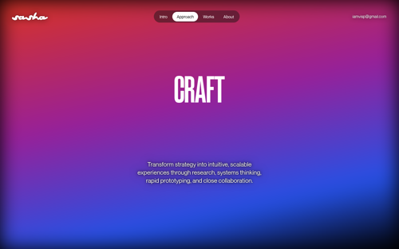
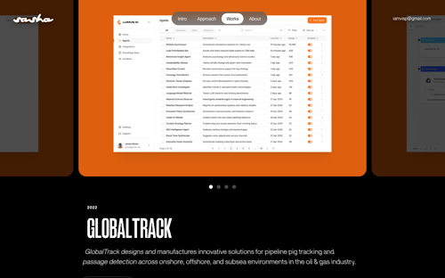
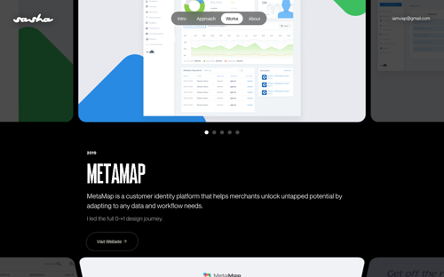
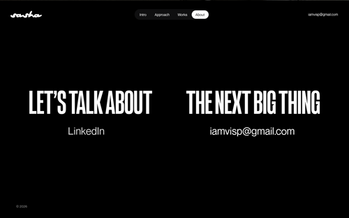

1 · HERO "Intro" — giant condensed title + script accents, floating work thumbnails around it (draggable in WebGL mode), scroll-spy nav pill, click-to-copy email top right

2 · APPROACH value screen "LISTENING" — full viewport, generative particle-thread canvas, one word + one paragraph

3 · APPROACH value screen "CRAFT" — each value gets its own art direction (this one a vivid gradient field)

4 · WORKS slide "GLOBALTRACK" — year tag, huge title, 2-line description, full-bleed brand-colored slide with product shot, side-peek of neighbours + dots

5 · WORKS slide "METAMAP" — "I led the full 0→1 design journey", Visit Website CTA, next slide peeking from below

6 · ABOUT / contact — "LET'S TALK ABOUT THE NEXT BIG THING", LinkedIn + email, the end of the ride